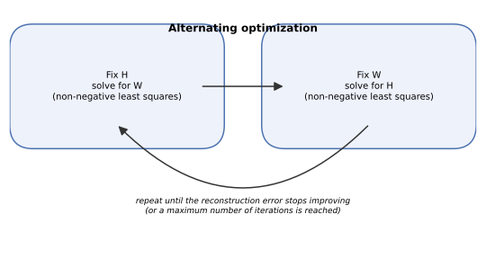
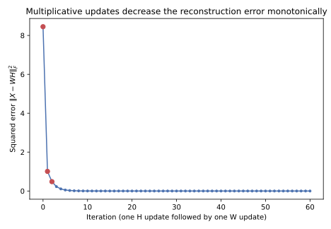
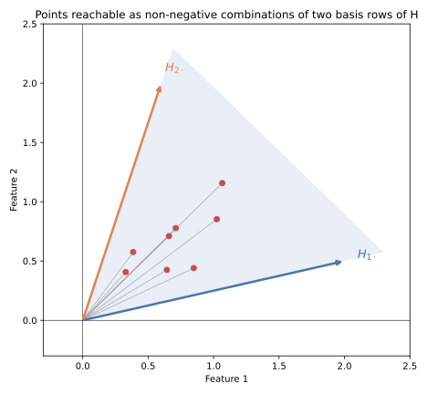

3 The mathematics of NMF
3.1 The representation
Collect the data into a matrix
\[X\in\mathbb{R}_{\ge0}^{n\times p}.\]
\(n\) is the number of samples. \(p\) is the number of measured features. Every entry of \(X\) is non-negative, which is the starting assumption of everything that follows.
The goal is a much smaller number of components \(k\), with
\[k\ll\min(n,p),\]
and an approximation
\[X\approx WH\]
with
\[W\in\mathbb{R}_{\ge0}^{n\times k},\qquad H\in\mathbb{R}_{\ge0}^{k\times p}.\]
Open this up one sample at a time. Row \(i\) of \(X\), the measurement vector for sample \(i\), is approximated as
\[x_i\approx W_{i1}H_{1\cdot}+W_{i2}H_{2\cdot}+\cdots+W_{ik}H_{k\cdot}.\]
Every term on the right is a component profile \(H_{r\cdot}\), one full row of \(H\) giving that component’s value across all \(p\) features, scaled by a single number \(W_{ir}\), the amount of that component present in sample \(i\). Do not move on until this reads naturally: \(H_{r\cdot}\) is what component \(r\) looks like across the original features, and \(W_{ir}\) is how much of component \(r\) sample \(i\) uses to rebuild its own measurement.
Zoom in further, to one single predicted entry:
\[\hat X_{ij}=(WH)_{ij}=\sum_{r=1}^{k}W_{ir}H_{rj}.\]
The predicted value of feature \(j\) in sample \(i\) is a sum of \(k\) contributions, one from each component, each contribution being that component’s amount in sample \(i\) times that component’s value at feature \(j\).
3.2 Why this is a reduction in dimension
Sample \(i\)’s original measurement has \(p\) numbers, one per feature. Its representation in \(W\) has only \(k\) numbers, row \(i\) of \(W\). That row, \(k\ll p\) numbers, is the reduced description of the sample used throughout this course.
\(H\) is not part of the reduced description of any one sample. It is shared across every sample, and its job is to map the \(k\) compressed numbers back out toward the original \(p\)-dimensional feature space. A sample’s full reconstruction, \(\hat x_i = W_{i\cdot}H\), needs both pieces: the sample’s own row of \(W\), and the shared \(H\) that every sample uses.
3.3 A low-rank approximation
A short linear-algebra fact makes precise what kind of approximation \(WH\) can be:
\[\operatorname{rank}(WH)\le k.\]
\(WH\) is built entirely out of \(k\) component directions (the \(k\) rows of \(H\)), so however \(W\) and \(H\) are chosen, \(WH\) cannot have more than \(k\) independent directions in it. Fitting NMF is therefore, among other things, fitting the best available rank-\(k\), non-negative approximation to \(X\).
3.4 The reconstruction error
Turn “approximates” into a number. Define the residual
\[E=X-WH,\]
and, for the squared-error version of NMF used through most of this chapter,
\[L(W,H)=\frac12\|X-WH\|_F^2.\]
Written out, the Frobenius norm is a sum over every entry:
\[L(W,H)=\frac12\sum_{i=1}^{n}\sum_{j=1}^{p}\bigl[X_{ij}-(WH)_{ij}\bigr]^2,\]
and substituting the component expansion of \((WH)_{ij}\) gives
\[L(W,H)=\frac12\sum_i\sum_j\left[X_{ij}-\sum_{r=1}^{k}W_{ir}H_{rj}\right]^2.\]
Fitting NMF means choosing every entry of \(W\) and every entry of \(H\) to make this sum small, subject to
\[W\ge0,\qquad H\ge0.\]
3.5 Relation to PCA and the SVD
For a fixed matrix \(X\) and a fixed target rank \(k\), the truncated SVD gives the best possible rank-\(k\) approximation under exactly this Frobenius loss, with no sign restriction on the factors. NMF solves the same kind of problem over a strictly smaller feasible set: every rank-\(k\), non-negative factorization is also an unrestricted rank-\(k\) factorization, but not the reverse. NMF cannot achieve a lower reconstruction error than truncated SVD at the same rank, and it should not be expected to. The value of NMF is the shape of the representation it returns, not a reconstruction advantage over the unrestricted best possible one.
The comparison with PCA needs one more piece of care. PCA’s components are orthogonal to each other, which is what makes statements like “PC1 explains 37% of the variance” meaningful: the total variance splits cleanly across orthogonal directions. NMF’s components are generally not orthogonal, so there is no NMF equivalent of that statement with the same mathematical content. A reconstruction error at a given rank is a well-defined, comparable number. A clean percentage-of-variance split across components is not something NMF provides.
3.6 No closed form, but a tractable structure
The loss depends on the product \(WH\). With both \(W\) and \(H\) unknown at the same time, \(L(W,H)\) is not a convex function of \((W,H)\) jointly, so there is no single-step formula analogous to the SVD that solves for both at once.
Fix one of the two factors, though, and the problem becomes much simpler. Hold \(H\) fixed and look at \(L\) as a function of \(W\) alone: it is a sum of ordinary squared errors, quadratic in \(W\), with a non-negativity constraint. That is a non-negative least squares problem, one that is well understood and efficiently solvable. Exactly the same is true the other way around: hold \(W\) fixed, and \(L\) becomes a non-negative least squares problem in \(H\).
This is the opening for an algorithm: alternate between the two easy subproblems instead of attempting the one hard joint problem directly.
3.7 Alternating optimization
3.7.1 Solving for W with H fixed
With \(H\) fixed, the subproblem is
\[\min_{W\ge0}\ \frac12\|X-WH\|_F^2.\]
Row \(i\) of this problem asks for the coefficients \(w_i\) (row \(i\) of \(W\)) that best reconstruct sample \(i\)’s measurement \(x_i\) as a combination of the component profiles in \(H\). Setting aside non-negativity for a moment, the ordinary least-squares stationary condition for this problem is
\[WHH^T=XH^T,\]
and, if \(HH^T\) is invertible,
\[W=XH^T(HH^T)^{-1}.\]
This unconstrained solution is exactly what ordinary linear regression would give, and it is not, in general, an answer to NMF’s problem: nothing stops it from containing negative entries. NMF replaces this closed-form regression with a non-negative least squares solve, which is the whole reason a specialized algorithm is needed instead of a single matrix formula.
3.7.2 Solving for H with W fixed
The mirror problem, with \(W\) fixed, is
\[\min_{H\ge0}\ \frac12\|X-WH\|_F^2,\]
again a non-negative least squares problem, this time solving for every column of \(H\) using the fixed component profiles in \(W\) as the regressors.
3.7.3 The loop
Together these two steps give the alternating algorithm used, in one form or another, by every practical NMF implementation:

- Fix \(H\), solve the non-negative least squares problem for \(W\).
- Fix \(W\), solve the non-negative least squares problem for \(H\).
- Repeat.
Each of the two steps can only decrease \(L\) or leave it unchanged, since each step solves its subproblem exactly (or at least does not make it worse). The multiplicative updates derived next are one specific, widely used way to carry out steps 1 and 2.
3.8 The gradients of the squared error
To derive an explicit update rule, start from
\[L=\frac12\|X-WH\|_F^2\]
and rewrite the Frobenius norm as a trace, which makes differentiating with respect to a whole matrix manageable:
\[L=\frac12\operatorname{tr}\bigl[(X-WH)^T(X-WH)\bigr].\]
Expand the product inside the trace:
\[\operatorname{tr}\bigl[(X-WH)^T(X-WH)\bigr] =\operatorname{tr}(X^TX)-2\operatorname{tr}(X^TWH)+\operatorname{tr}(H^TW^TWH).\]
Differentiating each term with respect to \(H\) (using the standard matrix-calculus identities \(\partial\operatorname{tr}(A^TB)/\partial A=B\) and \(\partial\operatorname{tr}(A^TBA)/\partial A=(B+B^T)A\), with \(B=W^TW\) symmetric) and dividing by 2 gives
\[\frac{\partial L}{\partial H}=W^TWH-W^TX.\]
By the same steps, differentiating with respect to \(W\) gives
\[\frac{\partial L}{\partial W}=WHH^T-XH^T.\]
Check the dimensions before moving on. \(H\) is \(k\times p\), so its gradient must also be \(k\times p\). \(W^TW\) is \(k\times k\) and \(H\) is \(k\times p\), so \(W^TWH\) is \(k\times p\). \(W^T\) is \(k\times n\) and \(X\) is \(n\times p\), so \(W^TX\) is \(k\times p\). Both terms, and therefore the gradient, are \(k\times p\), matching \(H\). The same check on the \(W\)-gradient confirms it is \(n\times k\), matching \(W\).
3.9 Multiplicative updates
An ordinary gradient descent step for \(H\) would be
\[H\leftarrow H-\eta\odot\bigl(W^TWH-W^TX\bigr)\]
for some step size \(\eta\), with \(\odot\) denoting elementwise multiplication. A fixed, scalar step size cannot guarantee \(H\) stays non-negative. The Lee-Seung multiplicative update is what happens when the step size is instead chosen elementwise, specifically
\[(\eta_H)_{rj}=\frac{H_{rj}}{(W^TWH)_{rj}}.\]
Substitute this into the gradient step:
\[H_{rj}-\ (\eta_H)_{rj}\bigl(W^TWH-W^TX\bigr)_{rj} =H_{rj}-H_{rj}\,\frac{(W^TWH)_{rj}-(W^TX)_{rj}}{(W^TWH)_{rj}} =H_{rj}\left[1-1+\frac{(W^TX)_{rj}}{(W^TWH)_{rj}}\right],\]
which simplifies to
\[\boxed{\ H\leftarrow H\odot\dfrac{W^TX}{W^TWH}\ }\]
with the multiplication and division both elementwise. The mirror derivation for \(W\), starting from \(\partial L/\partial W\) and the elementwise step size \((\eta_W)_{ir}=W_{ir}/(WHH^T)_{ir}\), gives
\[\boxed{\ W\leftarrow W\odot\dfrac{XH^T}{WHH^T}\ }\]
Because every quantity involved, \(X\), \(W\), \(H\), and therefore every entry of \(W^TX\), \(W^TWH\), \(XH^T\), and \(WHH^T\), is non-negative, each update multiplies a non-negative entry by a non-negative ratio. An entry that starts positive stays non-negative after the update. This is the precise mechanism by which multiplicative updates respect \(W\ge0\), \(H\ge0\) automatically, with no separate projection step needed. A loose but common way to describe the ratio is “observed divided by predicted.” That is a useful intuition after the derivation, but the terms above, \(W^TX\) against \(W^TWH\), are not literally \(X\) divided by \(\hat X\). Treat the phrase as a mnemonic, not a definition.
3.10 A complete numerical update
A small, fully explicit example makes the update equations concrete. Take
\[X=\begin{bmatrix}5&3\\4&2\\1&4\end{bmatrix},\qquad W=\begin{bmatrix}1&0.5\\0.8&0.4\\0.2&1\end{bmatrix},\qquad H=\begin{bmatrix}3&1\\1&2\end{bmatrix}.\]
The initial squared reconstruction error is
\[\|X-WH\|_F^2=8.45.\]
Updating H. First,
\[W^TX=\begin{bmatrix}8.4&5.4\\5.1&6.3\end{bmatrix},\qquad W^TWH=\begin{bmatrix}6.06&3.72\\4.47&3.84\end{bmatrix}.\]
Every entry of \(W^TWH\) is \((W^TW)\) (a \(2\times2\) matrix) times \(H\). For instance, \((W^TW)_{11}=1^2+0.8^2+0.2^2=1.68\) and \((W^TWH)_{11}=1.68\times3+(W^TW)_{12}\times1\), and so on for the rest, all ordinary matrix multiplication. Dividing \(W^TX\) by \(W^TWH\) elementwise and multiplying by \(H\) gives
\[H_{\text{new}}=H\odot\frac{W^TX}{W^TWH}= \begin{bmatrix}4.1584&1.4516\\1.1409&3.2813\end{bmatrix}.\]
The squared error after this one update, still with the original \(W\), drops to
\[\|X-WH_{\text{new}}\|_F^2=1.4831.\]
Updating W. Using \(H_{\text{new}}\),
\[XH_{\text{new}}^T=\begin{bmatrix}25.1469&15.5484\\19.5369&11.1263\\9.9649&14.2659\end{bmatrix},\qquad WH_{\text{new}}H_{\text{new}}^T=\begin{bmatrix}24.1534&15.5418\\19.3227&12.4334\\13.3875&13.9699\end{bmatrix}.\]
giving
\[W_{\text{new}}=W\odot\frac{XH_{\text{new}}^T}{WH_{\text{new}}H_{\text{new}}^T}= \begin{bmatrix}1.0411&0.5002\\0.8089&0.3579\\0.1489&1.0212\end{bmatrix}.\]
The squared error after this single H-then-W cycle is
\[\|X-W_{\text{new}}H_{\text{new}}\|_F^2=1.0093.\]
One full alternation, updating \(H\) once and then \(W\) once, took the error from 8.45 to 1.0093. Both updates were ordinary matrix multiplications followed by an elementwise rescaling. Nothing about them required calculus at the point of use, only at the point of derivation.

Figure 3.2 continues the same example well past the first cycle. The error keeps falling and does not increase at any step, matching the general property established above: each of the two sub-updates can only improve, or leave unchanged, the objective it is solving. In this particular toy example \(k=2\) equals the smaller dimension of \(X\), so a near-exact non-negative factorization happens to be reachable and the error keeps falling toward zero. With a real dataset, \(k\) is chosen far smaller than \(\min(n,p)\) and the error instead levels off at some positive value.
3.11 Convergence in practice
One complete iteration of the algorithm, as used throughout this course, means one update of \(H\) followed by one update of \(W\). Common stopping rules include a small relative change in the loss between successive iterations, a small change in \(W\) and \(H\) themselves, or a maximum number of iterations, whichever comes first.
A decreasing loss curve like Figure 3.2 is evidence that the algorithm is doing its job, step by step. It is not evidence that the run has found the single best possible factorization. NMF’s objective is nonconvex, and a monotonically decreasing sequence of updates is only guaranteed to converge to a stationary point, not necessarily the global minimum.
3.12 Local minima and initialization
Because the objective is nonconvex, where the algorithm starts can determine where it ends up. Two runs started from different initial \(W\) and \(H\) can converge to genuinely different factorizations, with different reconstruction errors and different-looking components, even on the same data with the same rank.
The simplest starting point is a random one: fill \(W\) and \(H\) with small positive random numbers and start alternating. This works, but different random seeds can give noticeably different results, and repeated runs are often needed to get a sense of how stable a given rank’s solution is.
NNDSVD (nonnegative double SVD) is a structured alternative. Rather than starting from noise, it builds an initial \(W\) and \(H\) directly from the leading singular vectors of \(X\), splitting each singular vector into its positive and negative parts and keeping only whichever part is larger for that component. The result is a deterministic, informed starting point that tends to reach a good solution in fewer iterations than a random start, without needing to know anything about NMF’s optimization landscape in advance.
There is a practical wrinkle worth knowing before using it with multiplicative updates. Basic NNDSVD can produce initial entries that are exactly zero, whenever the negative part of a singular vector was the smaller one that got discarded, and the multiplicative updates cannot revive an exact zero once one is in place: if \(H_{rj}=0\) at some iteration,
\[H_{rj}^{\text{new}}=0\times\frac{(W^TX)_{rj}}{(W^TWH)_{rj}}=0\]
regardless of what the ratio equals, and \(H_{rj}\) stays zero forever after. This is called zero locking. In practice, implementations that combine NNDSVD with multiplicative updates typically replace the exact zeros with small positive values (variants such as nndsvda and nndsvdar do this), so the structured starting point is kept without permanently freezing any entry at zero.
3.13 Scaling ambiguity
A reconstruction \(WH\) does not pin down \(W\) and \(H\) uniquely, even ignoring local minima. For any positive diagonal matrix \(D\),
\[WH=(WD)(D^{-1}H),\]
since \(DD^{-1}\) is the identity. \(WD\) rescales each column of \(W\) (equivalently, each component’s scores) by a positive constant, and \(D^{-1}H\) rescales the corresponding row of \(H\) by the reciprocal constant, and the product is completely unchanged.
As a small check, take \(D=\operatorname{diag}(2,0.5)\) with \(k=2\). Doubling column 1 of \(W\) and halving row 1 of \(H\), while halving column 2 of \(W\) and doubling row 2 of \(H\), leaves \(WH\) exactly as it was, entry for entry. This is exactly what was observed in the previous chapter’s R-versus-Python comparison: one fit’s \(H\) stayed under about 0.03 while its \(W\) ran into the thousands, and the other fit’s \(H\) ran up to about 43 while its \(W\) stayed under about 2, yet both reconstructed \(X\) about equally well. Absolute magnitudes of \(W\) or \(H\) are not meaningful on their own, or comparable across two different fits, until this scaling has been fixed by some convention, such as normalizing every row of \(H\) to unit norm.
3.14 Permutation ambiguity
A second, unrelated ambiguity comes from the fact that component labels are arbitrary. Swapping columns \(r\) and \(s\) of \(W\) together with rows \(r\) and \(s\) of \(H\) produces exactly the same product \(WH\): every term \(W_{ir}H_{rj}\) is still added to the same sum, just under a different name. This means “component 1” in one NMF run and “component 1” in another run of the same data need not correspond to the same underlying pattern at all, even when both runs found essentially the same solution. This is exactly why the previous chapter’s repeated-run stability check matched each pair of fitted profiles to each other by correlation before averaging their agreement, rather than assuming column 1 meant the same thing across runs.
3.15 Non-uniqueness beyond permutation and scaling
Permutation and scaling are harmless ambiguities: they do not change what was actually learned, only how it is labeled and normalized. NMF can also exhibit a deeper kind of non-uniqueness, in which genuinely different pairs \((W,H)\) and \((W',H')\), not related by any permutation or rescaling, achieve similar or even identical reconstruction error. When this happens, no amount of relabeling turns one solution into the other, because they describe the data differently, not just with different names for the same description. This is one of the reasons repeated runs, stability analysis, and independent scientific validation of what a component means all matter in practice: a single fit’s components are not automatically the one correct answer, even when the reconstruction error looks good.
3.16 The geometry of non-negative combinations
Everything above has an algebraic flavor. It is worth also seeing it geometrically, connecting back to the additive-parts picture from the first chapter. PCA’s reconstructions span an unrestricted linear subspace: any combination of its basis directions, positive or negative, is reachable. NMF’s reconstructions are restricted to
\[x_i\approx\sum_{r=1}^{k}W_{ir}H_{r\cdot},\qquad W_{ir}\ge0,\]
and the set of points reachable this way, using only non-negative coefficients on a fixed set of basis rows of \(H\), is a cone: closed under adding two reachable points together, and closed under scaling a reachable point up by any non-negative amount, but not closed under negation.

Each dot in Figure 3.3 is one sample, placed by choosing two non-negative coefficients and combining the two basis directions. No coefficient choice can place a point outside the shaded wedge. This is the same restriction, in a picture, as \(W\ge0\) in the algebra above, and it is why NMF’s components tend to behave like ingredients that can be present in some amount or absent, rather than like directions that a sample can also be measured against in the opposite sense.
3.17 Other loss functions
Everything so far used squared (Frobenius) error. It is a natural default, but not the only reasonable choice, and NMF as a factorization structure, \(X\approx WH\) with both factors non-negative, is separate from any particular choice of loss.
For count-like data, a Kullback-Leibler-based loss is a common alternative:
\[D_{\mathrm{KL}}(X\|WH)=\sum_{i,j}\left[X_{ij}\log\frac{X_{ij}}{(WH)_{ij}}-X_{ij}+(WH)_{ij}\right].\]
This loss arises naturally from treating each \(X_{ij}\) as a Poisson-distributed count with mean \((WH)_{ij}\), which is a more realistic noise model for sequencing counts or other count data than assuming additive Gaussian noise everywhere, the implicit assumption behind squared error. Lee and Seung derived multiplicative updates for this loss as well, with a similar elementwise-ratio structure and the same non-negativity-preserving property, though the update equations themselves differ from the Frobenius ones given above.
Frobenius loss and KL divergence are the two ends most commonly used in practice, but both are special cases of a broader family, the beta-divergence, indexed by a single parameter \(\beta\): \(\beta=2\) recovers Frobenius (squared Gaussian-like error), \(\beta=1\) recovers the KL divergence above, and \(\beta=0\) recovers the Itakura-Saito divergence, better suited to data with multiplicative, rather than additive, noise. The general beta-divergence updates are not derived here. The point to take away is that “fitting NMF” always means choosing both a rank and a loss, and that changing the loss changes which factorization is considered best, sometimes considerably.
3.18 Regularization and sparsity
The objective can be extended with penalty terms on \(W\) and \(H\), most commonly an L1 penalty (encouraging many entries to shrink toward exactly zero) or an L2 penalty (discouraging any single entry from growing very large), added to the reconstruction loss and traded off against it with a tuning weight.
Non-negativity alone does not guarantee sparse components. It rules out cancellation between positive and negative terms, which often produces components that are more concentrated than an unconstrained factorization would give, but a plain non-negative fit can still spread a component’s weight thinly across many features. An explicit L1 penalty on \(H\) pushes weak, uncertain feature loadings toward exactly zero, which can make a component easier to read as a short, specific list of defining features. That benefit comes with a cost: pushed too hard, the same penalty can zero out real but modest signal along with the noise, so the amount of regularization is itself a modelling choice to be checked, not a free improvement.
3.19 Practical algorithms
The multiplicative update derived in this chapter is the clearest way to see why NMF’s non-negativity constraint can be satisfied automatically, step by step, and it is a genuine, usable algorithm. It is not the only one used in current software. Modern implementations frequently reach for coordinate descent, full alternating non-negative least squares solved by a dedicated solver, or HALS (hierarchical alternating least squares), which updates one column of \(W\) or one row of \(H\) at a time rather than the whole matrix at once. All of these keep the same conceptual loop derived above:
- fix one factor,
- optimize the other under a non-negativity constraint,
- switch,
- repeat,
and differ mainly in how step 2 is solved and how quickly it converges. scikit-learn’s current NMF implementation offers both coordinate descent (solver="cd", the default) and multiplicative updates (solver="mu"), the latter needed for any loss other than Frobenius. R’s NNLM::nnmf() offers sequential coordinate-wise descent (method="scd", its default and generally the fastest option) alongside Lee-Seung multiplicative updates (method="lee"). R’s NMF package implements several algorithms under one interface, including the original Brunet et al. (2004) KL-based workflow (method="brunet") used for the molecular pattern discovery and consensus analysis in the next chapter’s exercise.
The practical upshot is the one stated at the start of this section: NMF names a factorization structure and an objective, not a single algorithm, and two packages that both claim to “do NMF” can use different losses and different solvers by default. Using a structured NNDSVD initialization for a reproducible fit, and matching repeated fits’ components to each other by correlation before trusting any of them individually, both from the previous chapter, are the general discipline this implies, not one-off tricks specific to that chapter’s example.
The final chapter puts all of this to work on a real dataset: gene expression data from acute leukemia patients, where the true structure is not built in by simulation and has to be discovered, and where the true class labels exist only to check the result afterward, never to guide the fit.